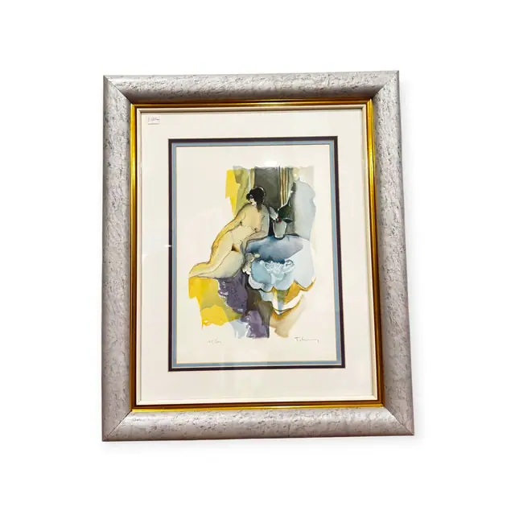
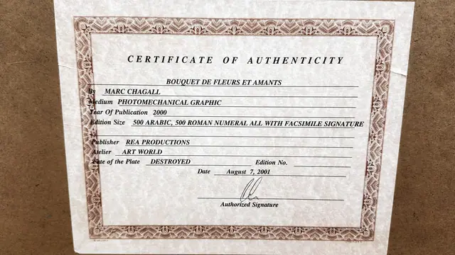
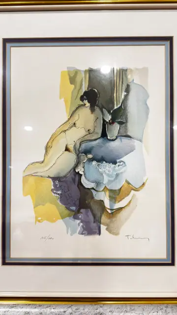
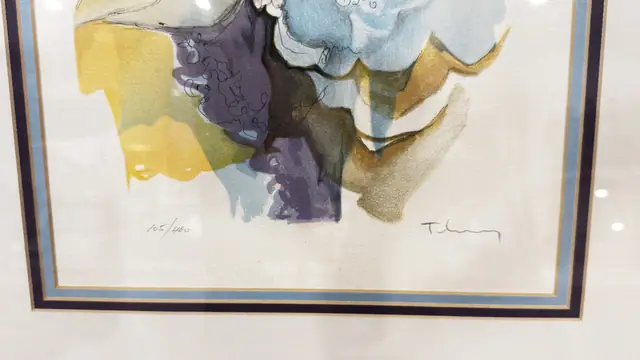
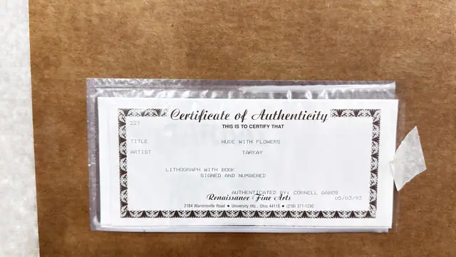

Paintings & Prints
Tarkay Nude with Flowers Signed Lithograph, Numbered Edition, Framed, 1993
Itzchak Tarkay · certified 1993
Price Upon Request





About the Item
TARKAY. A softly drawn nude sits in profile at the left, her body outlined in fine pen and filled with pale flesh and lemon washes, while behind and above her a mass of dove-blue, aubergine and olive blossoms opens across the sheet. The colour is applied in flat translucent shapes with hard edges typical of a lithographic separation, over a warm white deckle-edged paper. It is presented on a wide cream mat with pale blue and navy inner bands, in a mottled silver-white frame with a gold inner lip. Medium: colour lithograph on paper. Signed lower right of the sheet. Edition: 105/400. Accompanied by a certificate: Certificate of Authenticity no. 227: TITLE NUDE WITH FLOWERS; ARTIST TARKAY; LITHOGRAPH WITH BOOK; SIGNED AND NUMBERED; AUTHENTICATED BY: CORNELL GABOS; Renaissance Fine Arts, 2184 Warrensville Road, University Hts., Ohio 44118, (216) 371-1230; dated 05/03/93. Inscribed on the reverse or mount: 105/400 (pencil, lower left of the sheet). Condition: Glass glare and dust specks in the photographs; sheet clean and bright, certificate sleeved and lightly taped.
Details
- Creator:
- Itzchak Tarkay
- Creation Year:
- certified 1993
- Dimensions:
- Height: 25.2 in (64.01 cm)
Width: 21.0 in (53.34 cm)
outside of frame - Medium:
- colour lithograph on paper
- Edition:
- 105/400
- Period:
- 20Th
- Condition:
- Offered in the condition shown in the photographs.
- Reference Number:
- VO-268
- Documentation:
- Certificate of Authenticity no. 227: TITLE NUDE WITH FLOWERS; ARTIST TARKAY; LITHOGRAPH WITH BOOK; SIGNED AND NUMBERED; AUTHENTICATED BY: CORNELL GABOS; Renaissance Fine Arts, 2184 Warrensville Road, University Hts., Ohio 44118, (216) 371-1230; dated 05/03/93.
- Gallery Location:
- Renaissance Fine Arts